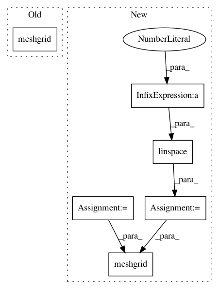

8150e189ca71e482c4fdadd4345e3c4b4b5a0a68,enthought/chaco/contour_poly_plot.py,ContourPolyPlot,_update_polys,#ContourPolyPlot#,67
Before Change
self.index._ydata.get_data()) //[:-1])
c = Cntr(xg, yg, self.value.raw_value)
else:
yg, xg = meshgrid(self.index._ydata.get_data(), //[:-1],
self.index._xdata.get_data()) //[:-1])
c = Cntr(xg, yg, self.value.raw_value.T)
self._cached_contours = {}
for i in range(len(self._levels)-1):
After Change
// XXX: this truncation is causing errors in Cntr() as of r13735
xdata = self.index._xdata.get_data()
ydata = self.index._ydata.get_data()
xs = linspace(xdata[0], xdata[-1], len(xdata)-1)
ys = linspace(ydata[0], ydata[-1], len(ydata)-1)
xg, yg = meshgrid(xs, ys)
if self.orientation == "h":
c = Cntr(xg, yg, self.value.raw_value)
else:
c = Cntr(xg, yg, self.value.raw_value.T)
In pattern: SUPERPATTERN
Frequency: 3
Non-data size: 6
Instances
Project Name: enthought/chaco
Commit Name: 8150e189ca71e482c4fdadd4345e3c4b4b5a0a68
Time: 2010-04-15
Author: pwang@651a555e-23ca-0310-84fe-ca9f7c59d2ea
File Name: enthought/chaco/contour_poly_plot.py
Class Name: ContourPolyPlot
Method Name: _update_polys
Project Name: scipy/scipy
Commit Name: 5ae662085c1ebae4a42808f1b0490b0065d2767b
Time: 2016-11-13
Author: person142@users.noreply.github.com
File Name: scipy/special/tests/test_mpmath.py
Class Name:
Method Name: test_loggamma_taylor2
Project Name: enthought/chaco
Commit Name: 8150e189ca71e482c4fdadd4345e3c4b4b5a0a68
Time: 2010-04-15
Author: pwang@651a555e-23ca-0310-84fe-ca9f7c59d2ea
File Name: enthought/chaco/contour_line_plot.py
Class Name: ContourLinePlot
Method Name: _update_contours